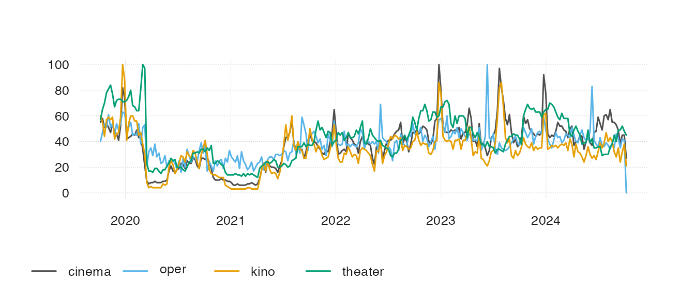
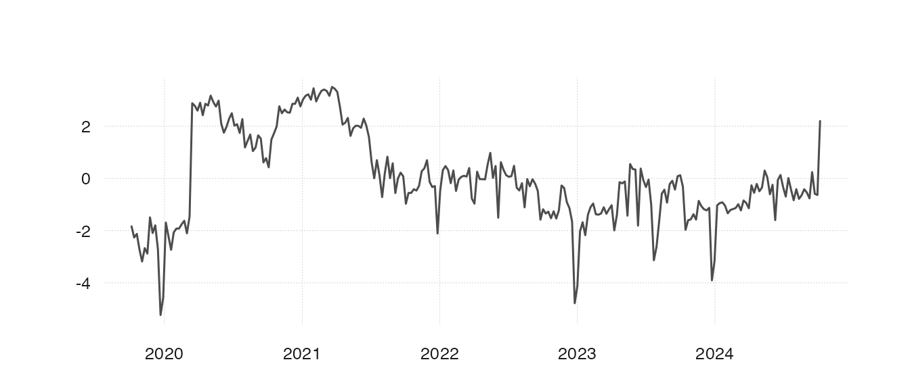

trendecon - a package for obtaining and analyzing Google Trends timeseries data directly from R.
People’s searches on Google can tell a lot about their demand for various goods and services as well as their perception of the state of the economy. Hence, carefully chosen sets of Google Trends keywords can serve as timely economic indicators. Functions within this package assist with obtaining, storing, comparing, and visualizing Google Trends results. This in turn provides a convenient way to explore different keyword combinations and evaluate their econometric value and performance.
Google Trends (https://trends.google.com/) is an online search tool from Google that can be used to analyse the popularity of various Google search terms across a specified time interval. The popularity measure of a particular search term, given a specified time interval, is relative - it is a number ranging from 0 to 100 where the value of 100 marks the date when the specified search term was most popular. By analyzing such relative popularity scores we can track the search term usage across time, compare its popularity between different geographical regions, or contrast it with other search terms.
For more information please see Google Trends FAQ.
The main function ts_gtrends() takes one or multiple
search term keywords and a geographical location as main arguments and
downloads data from the Google Trends API.
Suppose we are interested in the demand for cultural events in Switzerland. Think of what people would google if they want to go to a cultural event. For instance, they might google “cinema”, “oper”, “kino” and “theater”. The following command downloads the Google Trends data for these search terms:
library(trendecon)
gt_data <- ts_gtrends(
keyword = c("cinema", "oper", "kino", "theater"),
geo = "CH",
)
#> Downloading data for today+5-y
#> Downloading data for today+5-y
#> Downloading data for today+5-y
#> Downloading data for today+5-yBy default, a weekly timeseries for the last 5 years is obtained but
this interval can be changed by adjusting the time argument
(See “Further Help” for more). The output will be a “tibble” table with
3 columns: id (keyword), time (date), and value (relative popularity
score):
head(gt_data)
#> # A tibble: 6 × 3
#> id time value
#> <chr> <date> <int>
#> 1 cinema 2018-12-02 50
#> 2 cinema 2018-12-09 48
#> 3 cinema 2018-12-16 48
#> 4 cinema 2018-12-23 84
#> 5 cinema 2018-12-30 81
#> 6 cinema 2019-01-06 48We can then plot the time series using a ts_plot()
function from the tsbox package:

To retrieve the common signal of all four time series we can, for instance, use the first principal component:

Alternatively, ts_gtrends() function can accept Google
Trends categories instead of search term keywords. Unlike with search
terms, Google Trends categories are expressed with category numbers.
Such a category number can be specified instead of a keyword in which
case the trend data for the predefined Google search category will be
retrieved.
Under the hood it wraps around the gtrends() function
from the gtrendsR
package and modifies it by a) vectorizing it so that multiple keywords
can be requested in one go, b) returning the output in a “tibble” form
that can be passed to functions from the “tsbox” package, c)
automatically retrying in case of failures.
help(gtrends).ts_gtrends() function see
help(ts_gtrends).